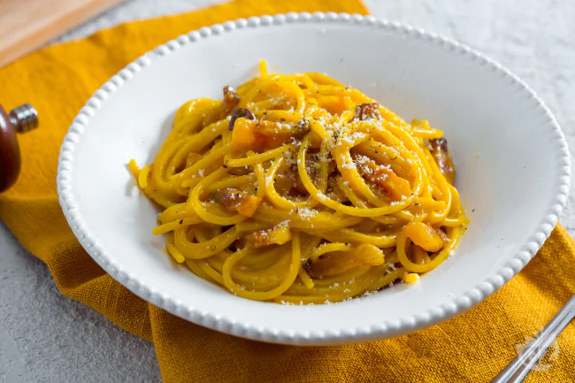

Let's do carbonara !.

Description
"Spaghetti alla carbonara" is a classic Italian dish, originating from Rome.
It is quick, easy and tasty to do.
Ingredients:
- 100 grams of Pasta (Spaghetti is preferrable)
- 3 eggs
- 50 grams of Guanciale
- Parmesan cheese
Steps
- Boil the water
- Put the spaghetti pasta in the water for 10 minutes
- in the meanwhile, prepare a bowl, and break the eggs into it.
- Mix the eggs until you get an uniform creme, add salt and pepper as you like Some add even a bit of milk.
- When the pasta is ready, throw it into a pan
- throw the egg creme with the pasta, and also the guanciale, mix together for minute
- Be careful not to let the creme solidify too much : it just has to not be entirely liquid.
- Enjoy !